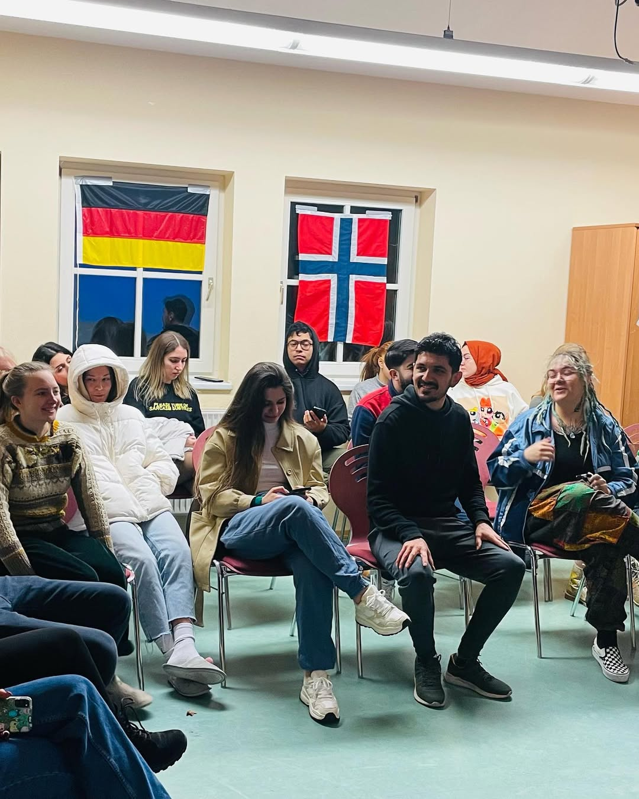
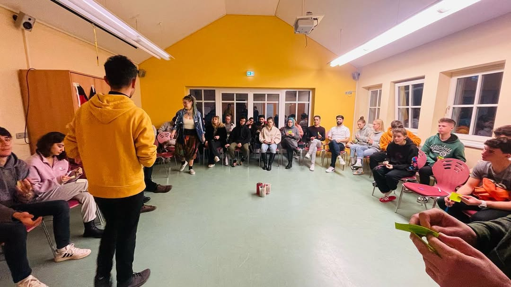

Erasmus+ KA152 · Co-funded by the European Union.
Climate Crisis youth mobility brings together young people from different countries to raise awareness about climate change, global warming, and the growing water crisis.
Through non-formal learning activities, participants explore the relationship between climate change, economic systems, and policies, while discussing how daily habits and behaviors affect environmental sustainability. The project promotes responsible practices such as the 3R principles (Reduce, Reuse, Recycle) and encourages the use of renewable energy sources like solar and wind power.
Participants also learn about the European Union’s strategies on water protection, biodiversity, climate action, and ecosystem preservation. In addition, the exchange introduces young people to the Erasmus+ Programme and Youthpass, helping them understand non-formal learning and key competences while working in an international and intercultural environment.
Climate Crisis had a strong impact on participants by increasing their awareness of climate change, water sustainability, and responsible environmental behavior. Through non-formal learning activities, they gained practical knowledge about sustainable water use, eco-friendly habits, and the relationship between climate, policy, and natural resources.
Participants also worked in an international environment, exchanged experiences with peers from different countries, and improved their teamwork, communication, and intercultural skills. The project encouraged young people to reflect on their own learning process, develop creative solutions to environmental challenges, and design awareness activities that can be implemented in their local communities.
"During the numerous workshops, presentations, debates, lessons, games, discussions and activities I met a lot of different, charismatic and passionate young people. I learned about new cultures, traditions, behaviors and made a lot of precious friends and memories, learned a ton and got inspired a “ton” ton, so that I can continue on my own path and get proved right on how we can “save our climate from this crisis”." — Lea, Macedonia



Follow our social media or contact us to be informed about future activities.